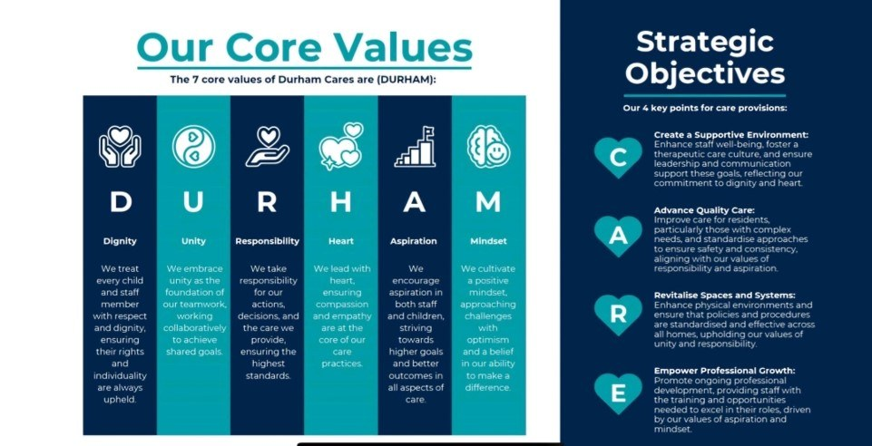
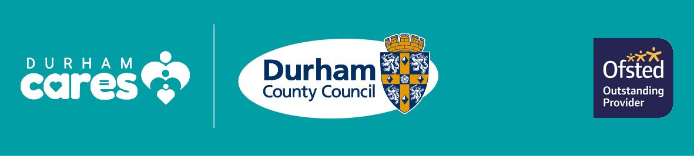

Durham County Council: a new vision for children’s services, built from the ground up
Durham’s children’s services had no shared vision for children in care. Durham Cares is the council’s answer: a vision co-designed with the people who will live it, piloted in residential care and now extending across children’s social care.

The starting point
Durham had no overarching vision for children in care. The council wanted one that shaped how it acts as a corporate parent, and that staff would recognise as theirs. It chose to start where the need was greatest: residential care, where homes were losing staff, applying policies differently from home to home, and facing a need to shift towards a more therapeutic way of caring.
What we did
Durham Cares was designed to roll out in three stages.
- Stage 1Residential care2024. A three-year strategy for Durham’s children’s homes, built with 105 residential staff through a survey, interviews and four workshops
- Stage 2Children’s social care2026. Consultation with seven teams across children’s social care and three senior leaders, to extend Durham Cares beyond residential care
- Stage 3The whole councilFrom 2027. The council adopts the vision, changing how corporate parenting is understood and delivered across Durham
Stage 1: residential care. We used upside-down management: staff named the problems, then worked with us on the solutions. Those solutions went to senior leaders, who agreed around 95% of them and gave a clear reason for every one they didn’t. The result was a vision, six values (DURHAM: Dignity, Unity, Responsibility, Heart, Aspiration and Mindset), four objectives (CARE: Create a supportive environment, Advance quality care, Revitalise spaces and systems, Empower professional growth), a detailed action plan and a three-year training plan, benchmarked against models including No Wrong Door, ARC, ATIC and HOMES.
Stage 2: children’s social care. In March and April 2026 we consulted the fostering service, home finding, children in care, connected carers, adoption, the unaccompanied asylum-seeking children team and leaving care, plus a strategic overview with senior leaders. We didn’t arrive with answers. We asked every team what was working, what was getting in the way, and what would need to change for them to do their best work. The findings became recommendations in three tiers, from quick wins in the first three months to long-term priorities, with an action plan to deliver them.
Communications. We also built a Durham Cares communication strategy with the council’s communications team, replacing long monthly newsletters with shorter content that’s easier to share, and designing the materials to carry the vision: newsletters, posters, roller banners and more.
A decision about young people
In the first stage we chose not to ask young people about restraint and staff stress without a safe framework in place, because it risked distress or leaving them feeling to blame. Instead, the strategy commits Durham to involving young people as the vision grows.
What changed
Durham’s governance approved the residential strategy, and 94% of staff rated the launch three stars or more.
“I think the process behind the strategy seems to have been extremely robust.”
The second-stage consultation found a service whose practitioners care deeply about the children they serve, with team cultures that are a strength to build on, and a shared set of barriers getting in their way. Durham now has a plan to remove them.
Durham Cares has stuck. In February 2025 more than 800 children’s social care staff joined us for its first steps beyond residential care. By March 2026 the council had taken the comms and branding live across the service, from Teams backgrounds and an intranet page to a Durham Cares podcast, and senior roles now carry the Durham Cares name.
Where it led
Durham Cares opened the door to two more pieces of work.
- NVR in residential care. Training 120 staff across 11 children’s homes, to meet the Durham Cares aim of less restraint and stronger relationships. Read the case study
- Families First Partnership. Leading the consultation that is shaping how Durham puts the national reforms into practice. Read the case study
See the work
Open any piece to look through it page by page.
DURHAM values, CARE objectives
Built with 105 residential staff. Choose a letter to see what it means.
The six DURHAM values
We treat every child and staff member with respect and dignity, ensuring their rights and individuality are always upheld.
We embrace unity as the foundation of our teamwork, working collaboratively to achieve shared goals.
We take responsibility for our actions, decisions, and the care we provide, ensuring the highest standards.
We lead with heart, ensuring compassion and empathy are at the core of our care practices.
We encourage aspiration in both staff and children, striving towards higher goals and better outcomes in all aspects of care.
We cultivate a positive mindset, approaching challenges with optimism and a belief in our ability to make a difference.
The four CARE objectives
Enhance staff well-being, foster a therapeutic care culture, and make sure leadership and communication support these goals.
Improve care for children, particularly those who need the most support, and standardise approaches so care is safe and consistent.
Improve the physical environment of the homes and make policies and procedures standard and effective across every home.
Promote ongoing professional development, giving staff the training and opportunities they need to excel.
Revolutionising residential care in Durham
What residential staff told us, presented back to them in Workshop 1.
The headline data
Staff turnover and sickness
High turnover and sickness were affecting team stability and consistency of care.
Children who need the most support
Staff were supporting children who need the most support, alongside legal processes such as deprivation of liberty orders, which added real pressure, especially for new home managers.
Policies and procedures
Some policies were out of date, unclear or too complicated to use.
A changing culture
Moving from punitive to therapeutic ways of caring was meeting resistance from some longer-serving staff.
Homes and the use of space
Some homes needed renovating, and living spaces were being used as offices, taking away from the feel of a home.
Professional development
Staff were supported to reach Level 5, but had no clear route to progress beyond it.
Use of restraint
There was no shared approach to restraint, and staff views ranged from comfortable to deeply uncomfortable.
Workshop 3: branding
- Understand branding identity, message and experience
- Create a brand for children’s residential care that works for young people and staff
- Collaborate in groups, then present back
Ideas from the room
The designer worked these ideas from the workshop into early routes.
Early routes
Each route was tested before the team settled on one name for the whole service: Durham Cares.


The logo
- Primary logo white, on Durham Cares turquoise
- Minimum width 33mm or 160px
- Clear space twice the heart device on every side
- Never alter the lettering, change the colours, distort it or add effects
The colours
Matched to Durham County Council’s palette, with high-contrast pairings checked for accessibility.
Working with the council brand
A dual-branded letterhead and lock-ups that keep Durham County Council as the lead organisation.
Montserrat is the typeface: modern, legible at small sizes and free to use.


Live across children’s social care
In March 2026 Durham took the comms and branding live across the service, with the communications team creating content in Canva.

How we got here
- Create urgency
- Form a powerful coalition
- Create a vision for change
- Communicate the vision
- Empower action
- Create quick wins
- Build on change
- Make it stick
The launch walked staff through Kotter’s eight steps for change, and where Durham was on the journey.
Upside-down management
Frontline first, then skilled operators, then senior leaders. A vision based on what staff asked for.
The vision
To provide an environment where every child and team member thrives, knowing that Durham Cares about their safety, happiness, health and development.
First-year commitments
Create a supportive environment
- Staff wellbeing initiatives
- Refreshed staff perks
- Better supervision and development plans
Advance quality care
- PBS and NVR training
- Restraint reduction strategies
- Weekend staffing support
Revitalise spaces and systems
- Staff involved in choosing new homes
- A care leaver apprenticeship
Empower professional growth
- Advanced training for staff
- Secondment opportunities
Staff told us what they needed, leaders committed or explained why not, and everything went into the action plan.
A three-year roll-out
The service becomes a role model for how Durham cares for people.
800 staff, one day
A care leavers’ hub stall at the event raised £933.51, which The Care Leaders matched.
Listening to children’s social care
Three tiers of change
Quick wins
0 to 3 monthsMedium-term actions
3 to 12 monthsLong-term priorities
12 months and beyondEvery recommendation came from what practitioners told us, with an action plan to deliver it.
One word, a big difference
The leaving care team’s word for a young person leaving care. One of the quick wins: use it everywhere.
How staff rated the launch
52 staff completed the feedback form after the October 2024 launch conference.
- Rated the launch 3 stars or more94%
- Rated the vision 3 stars or more93%
- Said the DURHAM values were clearly communicated92.3%
- Open to using NVR (yes or maybe)92%
- Said the CARE objectives reflect what matters most90%+
- Rated the consultation 3 stars or more79%
- Interested in joining a subgroup (yes or maybe)67.3%